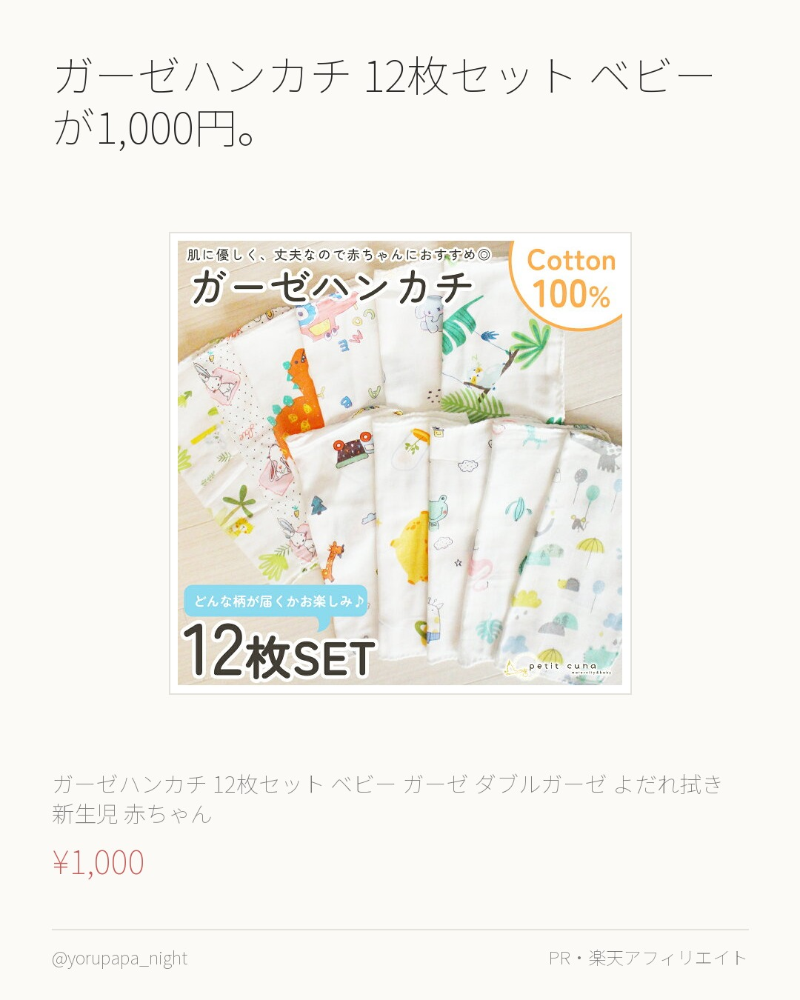
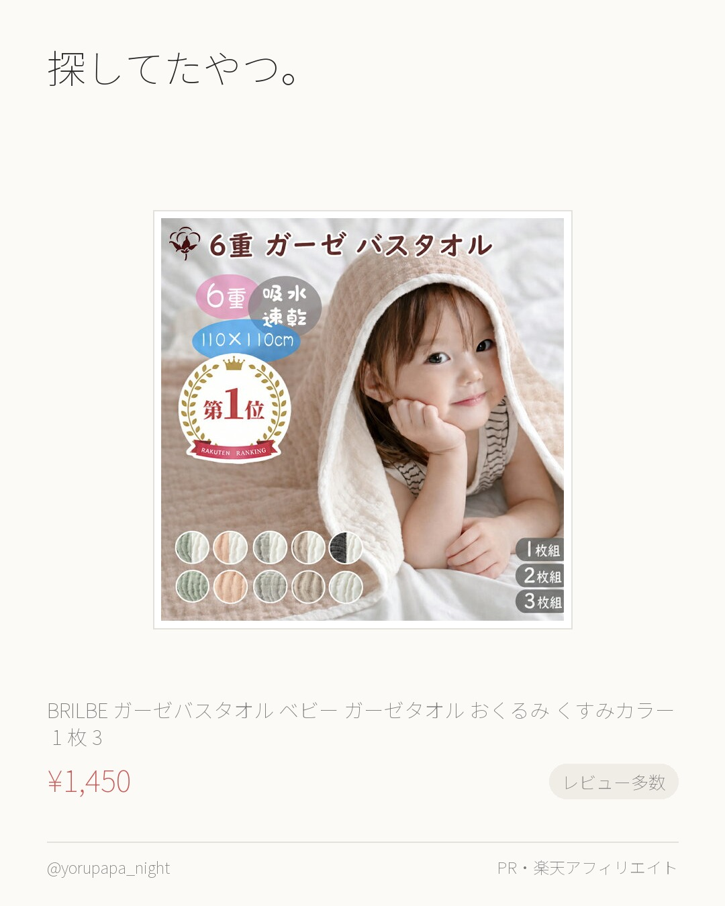
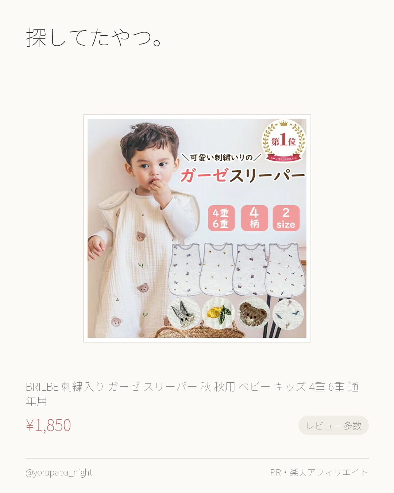
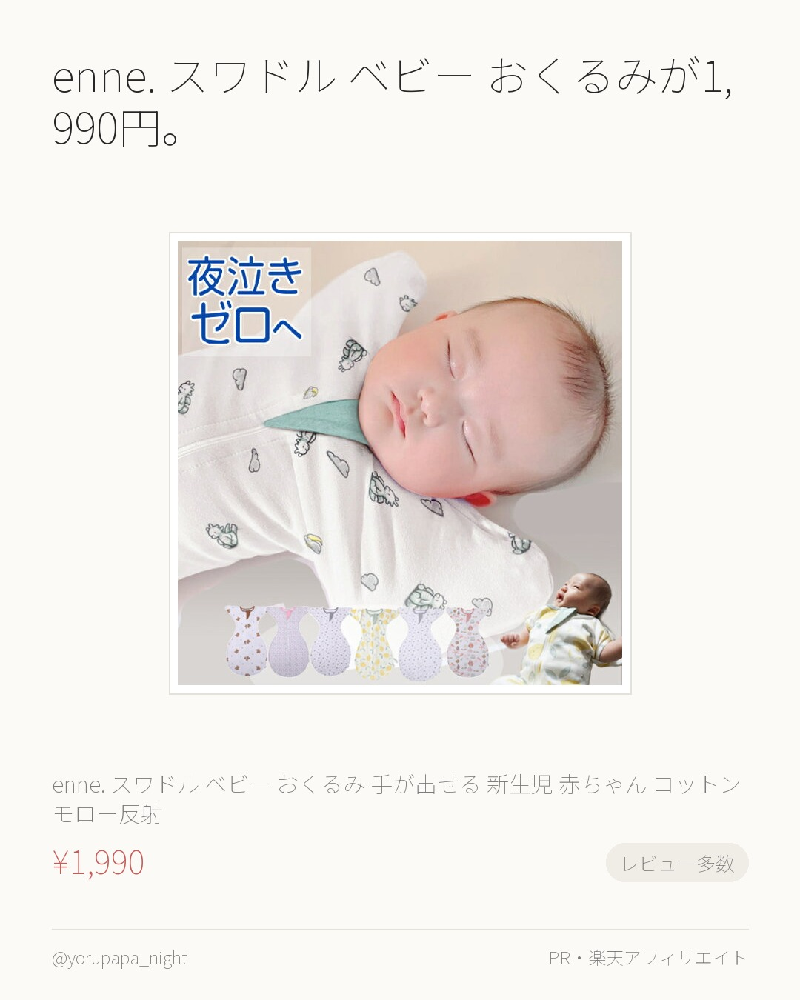
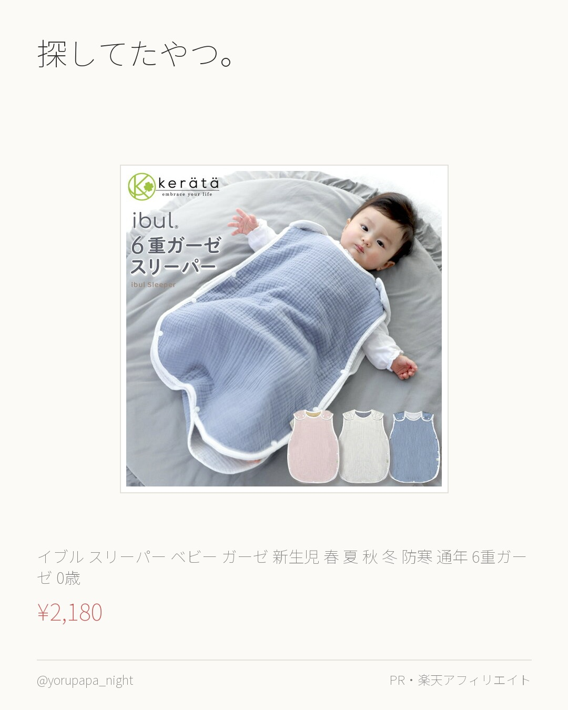
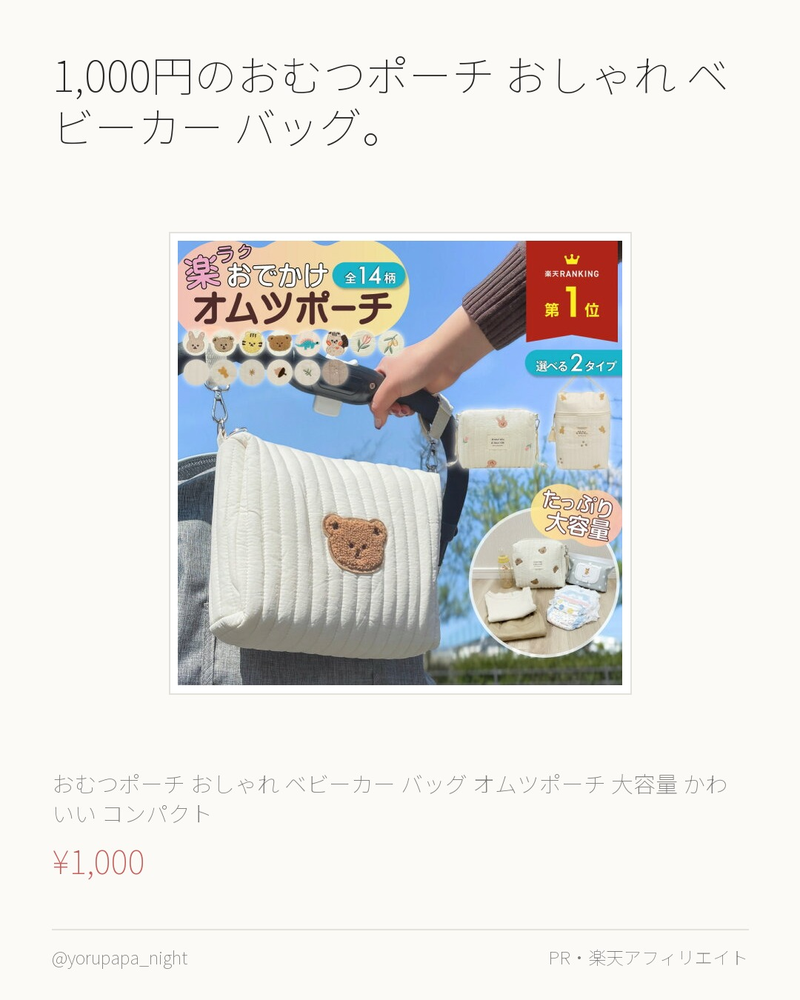
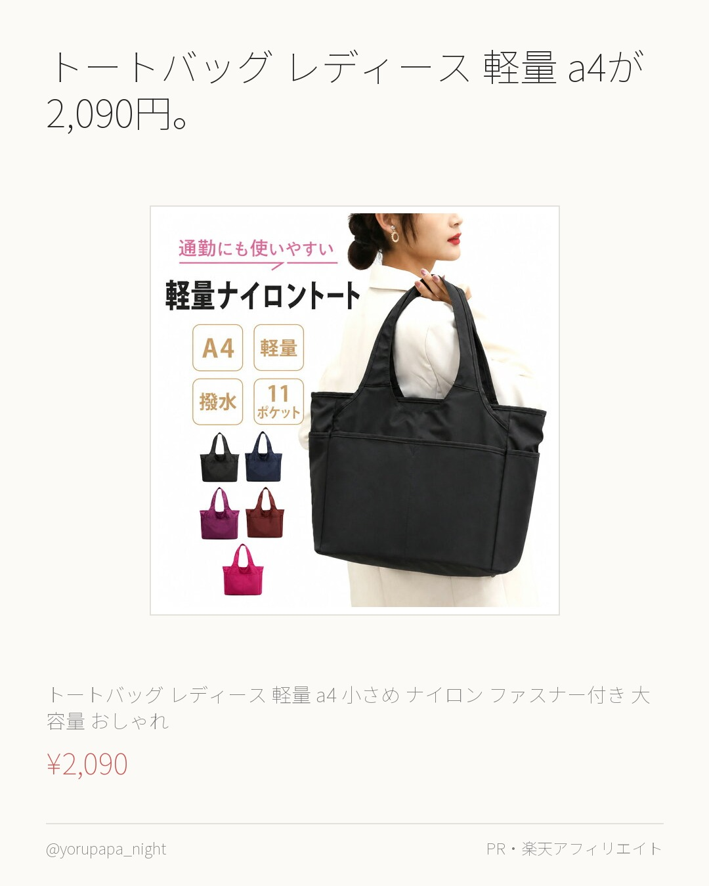
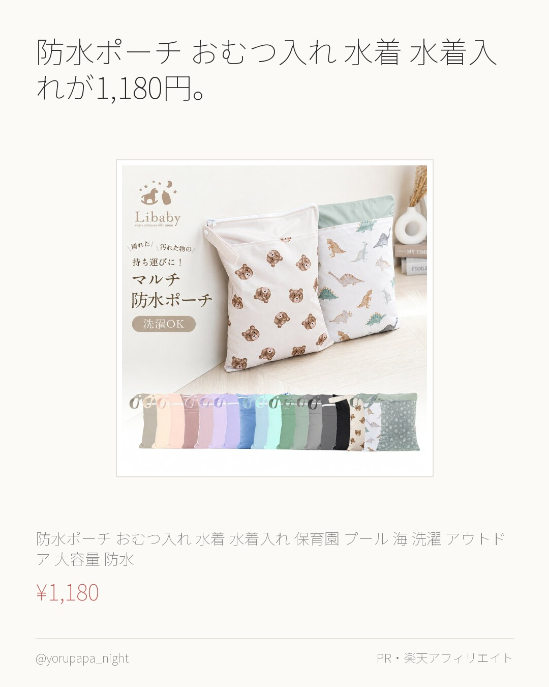
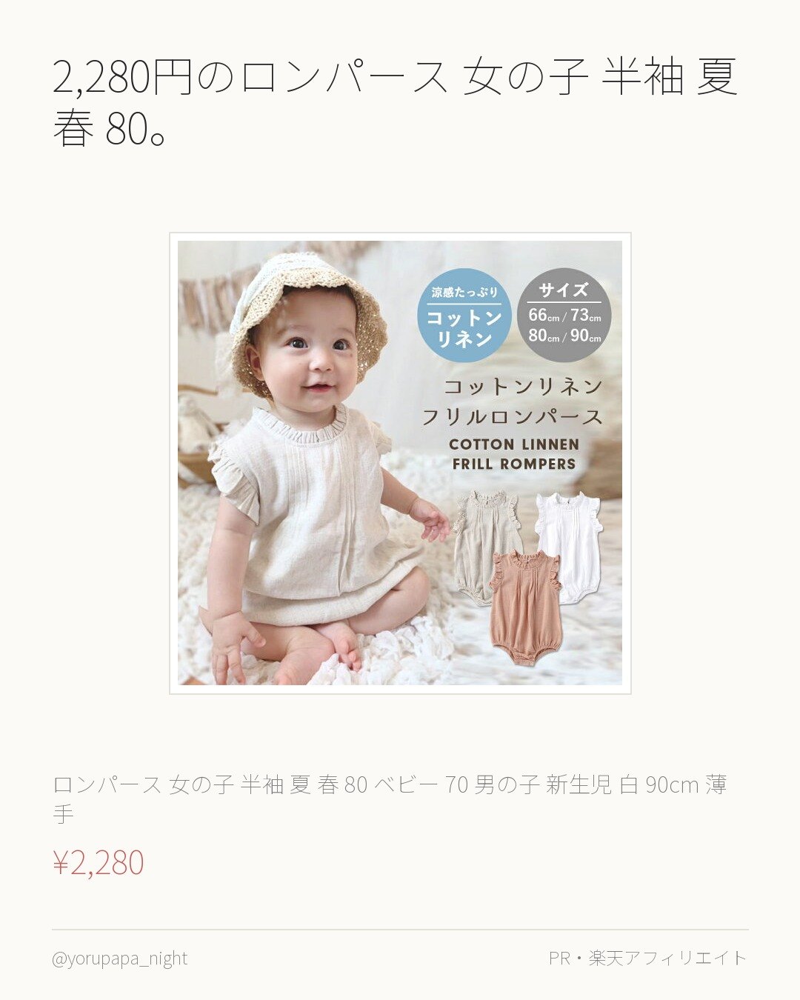
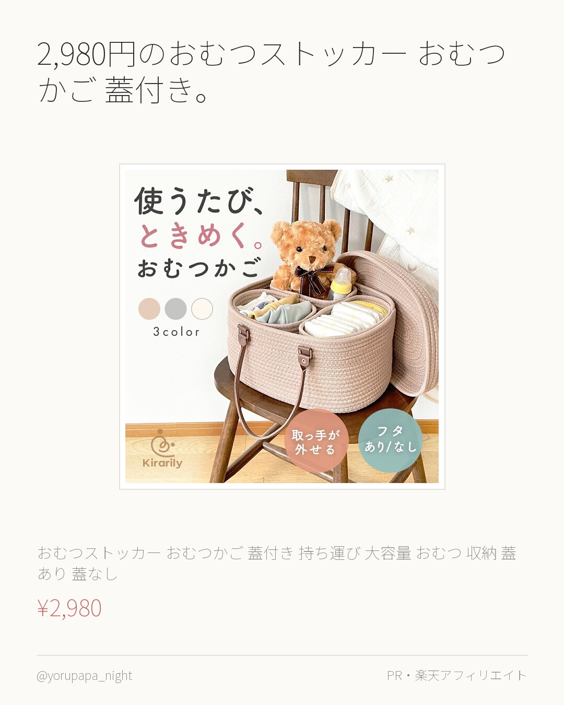

ガーゼハンカチ 12枚セット ベビーが1,000円。レビュー870件で4.63なのが決め手でした。気になってた人はぜひ。
ガーゼハンカチ 12枚セット ベビー ガーゼ ダブルガーゼ よだれ拭き 新生児 赤ちゃん かわいい ガーゼタオル ガーゼ ビブ 綿100％
¥1,000
楽天市場で見るよるぱぱ｜日中は会社員、夜と休日は育児担当。実際に使ったものだけ。
これまでの投稿をぜんぶ見る → 楽天ROOM／よるぱぱ
ガーゼハンカチ 12枚セット ベビーが1,000円。レビュー870件で4.63なのが決め手でした。気になってた人はぜひ。
ガーゼハンカチ 12枚セット ベビー ガーゼ ダブルガーゼ よだれ拭き 新生児 赤ちゃん かわいい ガーゼタオル ガーゼ ビブ 綿100％
¥1,000
楽天市場で見る
探してたやつ。BRILBE ガーゼバスタオル ベビー。レビュー1,534件で4.61なのが決め手でした。色違いも見てみてください。
BRILBE ガーゼバスタオル ベビー ガーゼタオル おくるみ くすみカラー 1 枚 / 2 枚 / 3 枚セット 6重ガーゼ 110×11
¥1,450
楽天市場で見る
探してたやつ。BRILBE 刺繍入り ガーゼ スリーパー。レビュー1,997件で4.57なのが決め手でした。気になってた人はぜひ。
BRILBE 刺繍入り ガーゼ スリーパー 秋 秋用 ベビー キッズ 4重 6重 通年用 有機コットン 保温性 通気性抜群 柔らかく お昼寝
¥1,850
楽天市場で見る
enne. スワドル ベビー おくるみが1,990円。レビュー3,355件で4.53なのが決め手でした。色違いも見てみてください。
enne. スワドル ベビー おくるみ 手が出せる 新生児 赤ちゃん コットン モロー反射 スリーパー メッシュ 大きいサイズ 春 夏 秋
¥1,990
楽天市場で見る
探してたやつ。イブル スリーパー ベビー ガーゼ 新生児。レビュー4.63（301件）なのが決め手でした。使い回しが効きそう。
(ケラッタ) イブル スリーパー ベビー ガーゼ 新生児 春 夏 秋 冬 防寒 通年 6重ガーゼ 0歳 1歳 2歳 3歳 4歳 赤ちゃん 出
¥2,180
楽天市場で見る
1,000円のおむつポーチ おしゃれ ベビーカー バッグ。レビュー4.67（220件）なのが決め手でした。色違いも見てみてください。
おむつポーチ おしゃれ ベビーカー バッグ オムツポーチ 大容量 かわいい コンパクト ベビーカーバッグ くま おむつ おしりふき マルチポ
¥1,000
楽天市場で見る
トートバッグ レディース 軽量 a4が2,090円。レビュー571件で4.55なのが決め手でした。色違いも見てみてください。
トートバッグ レディース 軽量 a4 小さめ ナイロン ファスナー付き 大容量 おしゃれ 肩掛け メンズ バッグ 通勤 通学 多収納 無地
¥2,090
楽天市場で見る
防水ポーチ おむつ入れ 水着 水着入れが1,180円。レビュー4.63（295件）なのが決め手でした。気になってた人はぜひ。
【一部商品10％OFF！9/30まで】防水ポーチ おむつ入れ 水着 水着入れ 保育園 プール 海 洗濯 アウトドア 大容量 防水 撥水 軽量
¥1,180
楽天市場で見る
2,280円のロンパース 女の子 半袖 夏 春 80。レビュー4.57（475件）なのが決め手でした。色違いも見てみてください。
ロンパース 女の子 半袖 夏 春 80 ベビー 70 男の子 新生児 白 90cm 薄手 90 ベビー服 夏服 赤ちゃん ロンパース新生児
¥2,280
楽天市場で見る
2,980円のおむつストッカー おむつかご 蓋付き。レビュー4.6（373件）なのが決め手でした。気になってた人はぜひ。
【在庫限り★楽天1位】 おむつストッカー おむつかご 蓋付き 持ち運び 大容量 おむつ 収納 蓋あり 蓋なし かわいい おしゃれ バスケット
¥2,980
楽天市場で見る